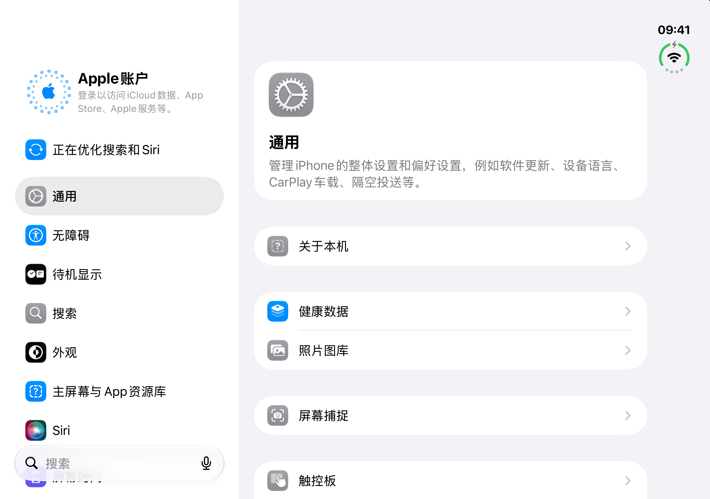
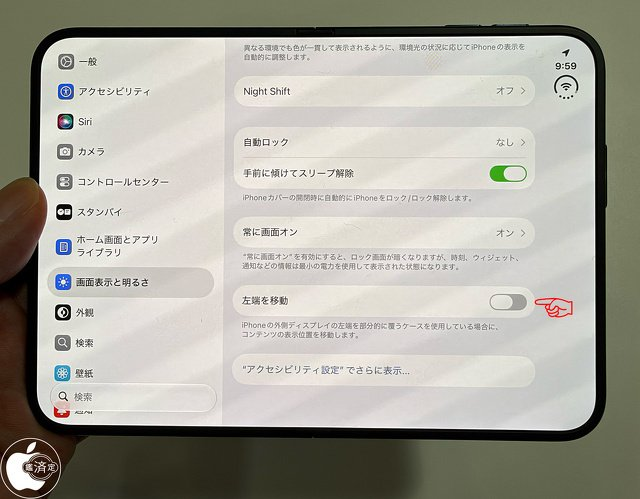

底图与真机的区别
当前生成器使用 iPhone Duo 模拟器的原始截图。网上找到的真机设置页是实拍照片，无法直接用作清晰的截图底图，因此本次保留原图，并在页面标明来源。

2026-10-18 采集，2853 × 2007，右侧为“通用”。

© MACお宝鑑定団，刊于 ITmedia，2026-09-18。对照图片保持原样；不是屏幕原始截屏。
核实到的差异
| 对比项 | 现用底图 | 真机 / 网络参考 |
|---|---|---|
| 内屏尺寸 | 2853 × 2007 | Apple 技术规格列出 2670 × 1878（横向）。两者比例接近，像素不同。 |
| 设置内容 | “通用”页；侧栏没有无线局域网、蜂窝网络等连接项。 | 真机实拍显示“显示与亮度”，可见自动锁定、音量键滑动解锁、常亮画面和左端位移等选项。不能把模拟器的菜单当作完整真机菜单。 |
| 账号状态 | 原图未登录；工具只替换头像、名字、时间。 | 这张真机实拍未展示账号区，无法核对登录后的账号卡片。因此生成结果不能视为已验证的登录状态真机截图。 |
| 状态栏 | 时间与状态图标在右侧纵向排列。 | 真机实拍同样在右侧。这个位置不是与普通 iPhone 不同就代表错误。 |
| 底图可用性 | 原尺寸 PNG，区域与像素可验证。 | 实拍仅 640 × 499，有透视、反光、机身边框，且没有账号区和配套外屏截屏，不适合直接替换。 |
其他核查来源
KeyboardKit 的展开 / 合起设置图可用于对照分栏方式，但文章发布于上市前，图片带模拟器边框且账号未登录，未作为真机底图采用。
截至 2026-10-25，本次检索没有找到来源可核实、清晰无透视、包含账号区的中文设置页内外屏原始截图对。现用两张底图未替换，也未通过 AI 或手绘补成真机界面。
图片来源、SHA-256 与许可范围见 SOURCES.md。对照照片不在项目 MIT 代码许可范围内。